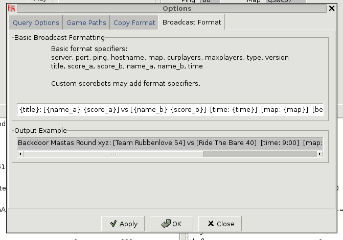
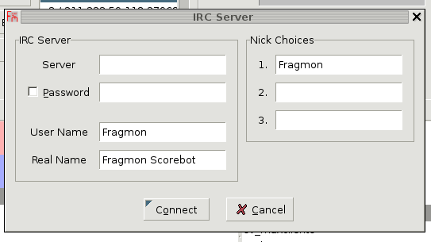
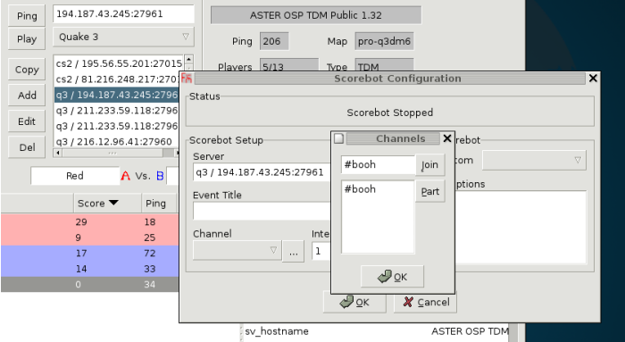
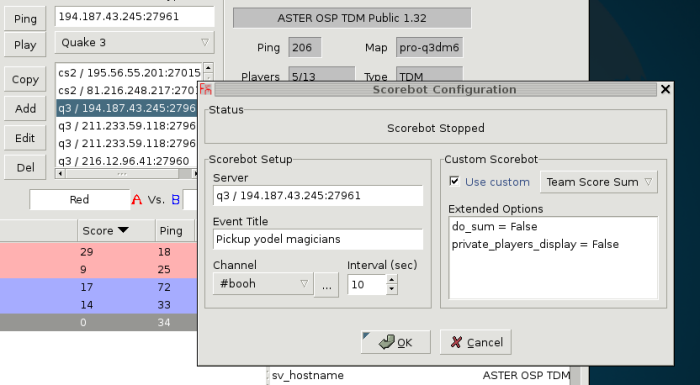

Running a Scorebot
Set Broadcast Format

In the Game -> Options... -> Broadcast Format panel, adjust the format string to your liking. You can adjust this format at any time, even during broadcast.
Connect to IRC

Click IRC -> Connect... and fill in the values.
Configure Scorebot

First, select or enter a server in the server input area and click IRC->Broadcast->Configure... The selected server will appear in the scorebot dialog. To change the server, select a different server from the server input and reopen the scorebot dialog. Input desired values for the event title and broadcast interval (don't set this too low!), and select a channel from the drop down list. Click the button next to the list to join or part channels.

You can also select and configure a custom scorebot implemented in Python from this dialog. A custom scorebot may add format specifiers to the broadcast format, change the output style, and other things. If the custom scorebot has any user configurable options, they will appear in the Extended Options list. Double click an item to set its value. You may input any text for an extended option; however, the custom scorebot may display an error if the text entered is not in the expected format. Read the scorebot's documentation or source code to learn what values it accepts.
Click OK when you're done. You can revisit the configuration dialog at any time, even after the bot has started broadcasting. However, loading the dialog during broadcast disables the selection of custom scorebots; the current bot in use may only be configured.
Start broadcasting
Click IRC->Broadcast->Start to start broadcasting using the configured interval, and IRC->Broadcast->Stop to stop. After broadcasting has started you may not change the game server you configured earlier until the bot is stopped again. The IRC->Broadcast menu also has some other functions, such as Pulse, which instructs the scorebot to broadcast once, and Print Players, which instructs the bot to print a list of players on each team.